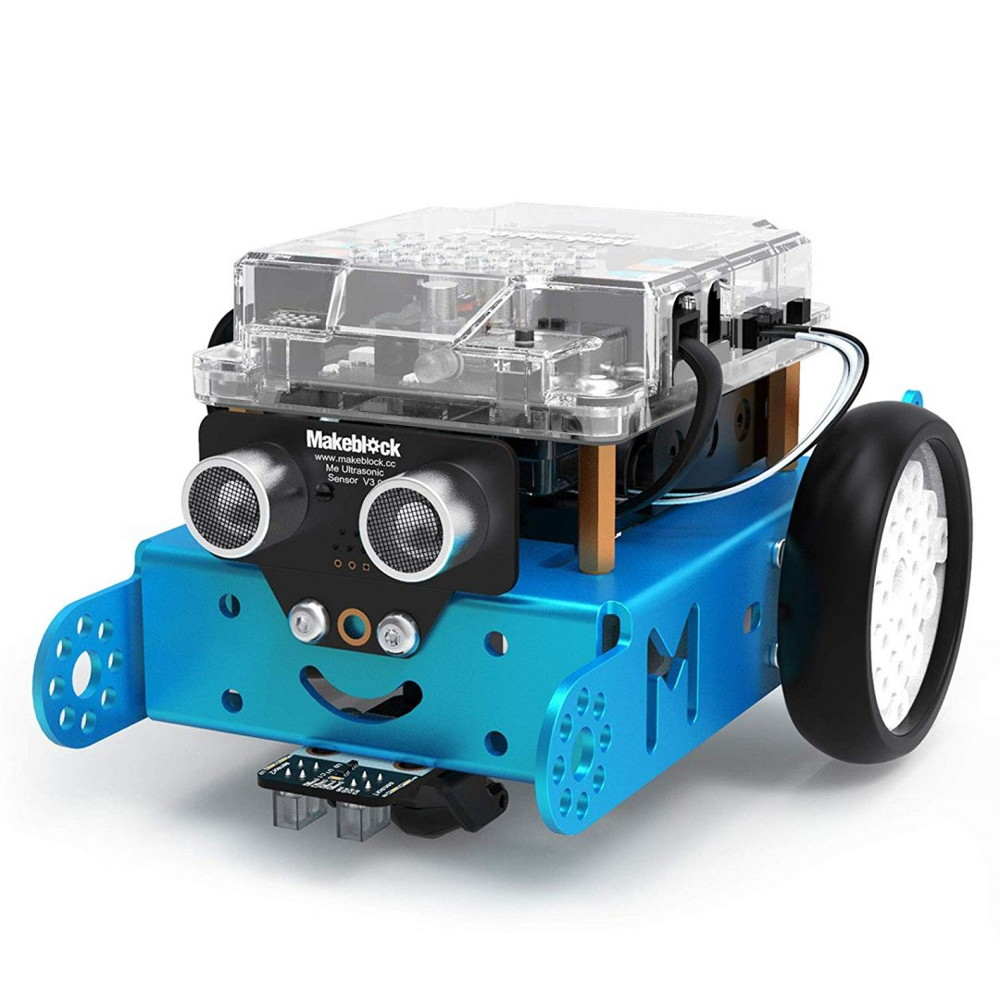

This is how the old website looks like!
|  | I programmed the mBot to do lots of amazing stuff like follow a black line, detect an obstacle in front of it and go around it and also push a block from one point to another |
|
This is the mouse game I made on sratch The player uses the arrow keys to control the mouse to try and eat the taco which is bouncing around. |
|
|
This is catch the rabbit, a game I made using Appinventor 2. Basically, you are supposed to tap on the rabbit to catch it and earn points, tap the monkey and well, you lose points. |
This is how the old website looks like!
|
I created this website using Visual Studio Code. |